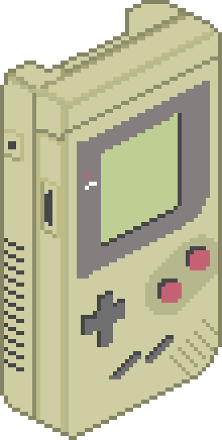

Te voilà arrivé au premier checkpoint : celui de la Nintendo Entertainment System (la NES pour les intimes…ou plutôt pour tout le monde). Nous sommes en 1982, la NES fait son entrée sur le marché japonais puis sur le marché américain en 1985. C’est sur cette console que de nombreuses franchises mémorables ont débutée: Metroid et Dragon Quest en 1986, Final Fantasy en 1987… Bien sûr, sans oublier celle qui est devenue le visage du jeu vidéo : Super Mario Bros en 1985. Tous ces jeux ont aidé Nintendo à se créer un véritable arsenal qui l’aidera à monter en puissance.
Tu es maintenant au deuxième checkpoint : celui de la GameBoy. Nintendo n’en était pas à son coup d’essai et voulait marquer les esprits une seconde fois. C’est pour cela qu’elle conçoit sa nouvelle arme d’élite à ajouter à son arsenal : la Gameboy. Cette dernière ne manque pas d’arguments pour convaincre : un prix bas, une petite taille, mais un processeur très puissant pour l’époque et une grande autonomie. Malgré les quelques réserves de certains supérieurs de Nintendo, cette idée issue des cerveaux de l’équipe Nintendo Research & Development 1 s’avéra être un coup de génie. La console fut un tel succès qu’elle eut droit à une panoplie de variantes : GameBoy Color, GameBoy Advance, GameBoy Micro, GameBoy Light, GameBoy Pocket… Elle casse tous les records. Tout cela sans parler du catalogue de jeux et d’un en particulier qui deviendra la franchise la plus lucrative de l’histoire : Pokemon.
Tu es maintenant au troisième checkpoint : celui de la guerre des consoles. Une histoire serait ennuyeuse s’il n'y avait pas des adversaires pour nous mettre des bâtons dans les roues. Cet adversaire prend le nom de Sega. Pendant une dizaine d'années, les deux empires se sont livré une guerre sans merci. D’un côté Sega avec sa Megadrive, Sega Saturn ainsi que Sonic en tête de l’armée et de l’autre Nintendo avec sa NES, GameBoy, Nintendo 64 et Mario en tant que représentant. Puis un nouveau concurrent plus dangereux arrive en 1994 : Sony. Avec une puissance inégalée jusque-là et des univers de jeu plus matures; Sony montre qu’il n’est pas là pour rigoler avec ses Playstation.
Le quatrième checkpoint : la chute et la renaissance. La guerre des consoles devenant de plus en plus rude dans les années 2000, Nintendo peine à trouver sa place d’antan. La sixième et septième génération de consoles sont des moments compliqués pour l’ancien numéro 1. Face à la Playstation 2 qui enchaîne les jeux à succès et la Xbox qui ne se laisse pas faire ; Nintendo se voit jeter hors de la course silencieusement. Cela va durer plusieurs années. Jusqu'à ce qu’une certaine console hybride aux manettes détachable vienne le tirer de l’ombre. Il s’agit de la Nintendo Switch. Avec un concept novateur et une grande libraire de jeux acclamés tel que The Legend of Zelda: Breath of the Wild, la Switch se révélera être l’héroïne de Nintendo.